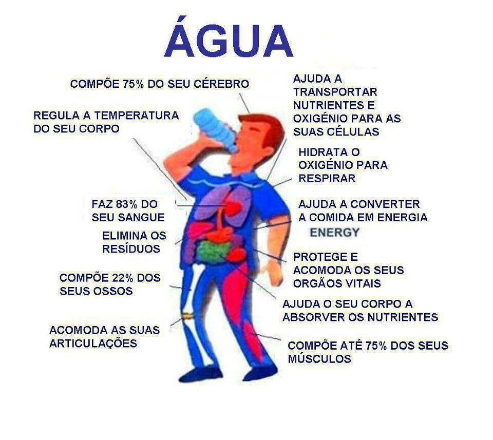

Importância
A água é fonte da vida. Não importa quem somos, o que
fazemos, onde vivemos,
nós dependemos dela para viver. No entanto, por maior que seja a importância da água, as pessoas
continuam poluindo os rios e destruindo as nascentes, esquecendo o quanto ela é essencial para
nossas vidas.A água é, provavelmente o único recurso natural que tem a ver com todos os aspectos
da civilização humana, desde o desenvolvimento agrícola e industrial aos valores culturais e
religiosos arraigados na sociedade. É um recurso natural essencial, seja como componente
bioquímico de seres vivos, como meio de vida de várias espécies vegetais e animais, como
elemento representativo de valores sociais e culturais e até como fator de produção de vários
bens de consumo final e intermediário.Segundo as estatísticas, 70% da superfície do planeta são
constituídos de água. Dessa água toda, de longe o maior volume é de água salgada e somente 2,5%
são de água doce e, desses míseros 2,5%, quase 98% estão “escondidos” na forma de água
subterrânea. Isto quer dizer que a maior parte da água facilmente disponível e própria para
consumo é mínima perto da quantidade total de água existente na Terra. Nas sociedades modernas,
a busca do conforto implica necessariamente em um aumento considerável das necessidades diárias
de água.

Importância da água para o corpo humano
A água é a principal substância responsável pelo
planeta como o vemos
hoje. Sem ela, nenhuma forma de vida conhecida atualmente existiria ou sobreviveria. Em
todos os organismos vivos, ela atua em funções importantes que são essenciais para o
funcionamento adequado de um organismo.No corpo humano, essa substância exerce variadas
atividades essenciais para garantir o equilíbrio e funcionamento adequado do organismo como
um todo. Dentre essas funções, podemos destacar o seu papel como solvente, garantindo um
meio propício para a realização da grande maioria das reações químicas.Além disso, a água
também exerce papel primordial na eliminação de substâncias tóxicas. É, principalmente, por
meio da urina, que é 95% composta de água, que liberamos para fora do corpo substâncias que
estão em excesso ou que não possuem função no nosso organismo.
A água
também é um importante
componente do plasma sanguíneo, sendo responsável, portanto, pelo transporte de nutrientes,
oxigênio e sais minerais para as células.

Importância da água para o planeta
A importância da
água do planeta é de
tamanha proporção, posto que é um elemento essencial para a sobrevivência de animais e
vegetais na Terra, além de fazer parte de inúmeras atividades dos seres humanos. A água está
relacionada não só com o surgimento de vida na Terra, mas também com a sua evolução.Quando o
planeta é visto do espaço, o azul se sobressai pela enorme quantidade de água no planeta, já
que cerca de 70% da superfície é coberta por água. Entretanto, a maior parte da água no
planeta é salgada. Há apenas 2,7% de água doce e, desse percentual, apenas 0,1% corresponde
à água doce disponível para utilização. A água é a fonte de vida de todos os seres vivos.
Por isso, nas expedições em outros planetas, a água é um dos primeiros recursos procurados,
pois pode ser um indicador da existência de vida. A água está presente em grande quantidade
nos mais diversos seres existentes no meio ambiente, ou seja, ela é um bem comum. Vale
lembrar também que a distribuição da água pelo planeta não é regular.
Em
muitos lugares ela
é escassa, dificultando a ocupação do espaço e o seu aproveitamento pelo homem.